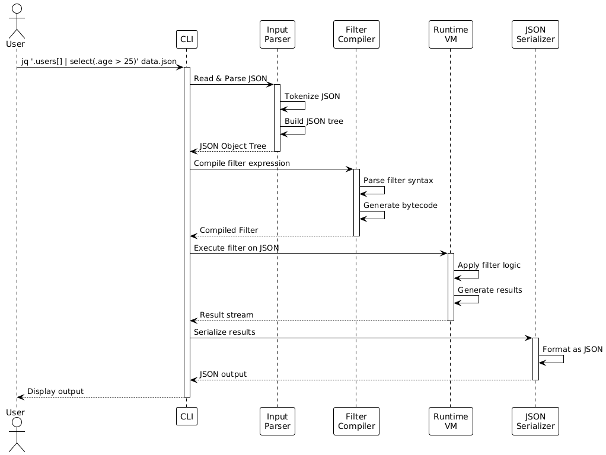

A lightweight and flexible command-line JSON processor for parsing, filtering, and transforming JSON data
Master the art of JSON manipulation with jq's powerful filtering and transformation capabilities
Get StartedBefore jq, working with JSON data on the command line was painful and error-prone.
jq was created by Stephen Dolan in 2012 as a response to the growing prevalence of JSON in web APIs, configuration files, and data interchange formats. As JSON became ubiquitous in software development, the need for a specialized command-line tool that could efficiently parse, filter, and transform JSON data became apparent.
sed for JSON data - a simple, composable tool that does one thing exceptionally well: processing JSON from the command line.
Easy to learn syntax that feels natural for command-line users
Filters can be chained and combined to build complex operations
Written in C for speed and minimal resource usage
jq is available on all major platforms and can be installed using package managers or from source.
brew install jqsudo port install jqjq --versionsudo apt-get update
sudo apt-get install jqsudo dnf install jq
# or
sudo yum install jqsudo pacman -S jqchoco install jqscoop install jqDownload the Windows executable from: https://github.com/jqlang/jq/releases
Add the directory containing jq.exe to your PATH environment variable.
git clone https://github.com/jqlang/jq.git
cd jq
git submodule update --init
autoreconf -fi
./configure --with-oniguruma=builtin
make -j8
sudo make installjq is built as a streaming JSON processor with a clear separation of concerns:
@startuml
!theme plain
actor User
participant "CLI" as CLI
participant "Input\nParser" as Parser
participant "Filter\nCompiler" as Compiler
participant "Runtime\nVM" as VM
participant "JSON\nSerializer" as Serializer
User -> CLI: jq '.users[] | select(.age > 25)' data.json
activate CLI
CLI -> Parser: Read & Parse JSON
activate Parser
Parser -> Parser: Tokenize JSON
Parser -> Parser: Build JSON tree
Parser --> CLI: JSON Object Tree
deactivate Parser
CLI -> Compiler: Compile filter expression
activate Compiler
Compiler -> Compiler: Parse filter syntax
Compiler -> Compiler: Generate bytecode
Compiler --> CLI: Compiled Filter
deactivate Compiler
CLI -> VM: Execute filter on JSON
activate VM
VM -> VM: Apply filter logic
VM -> VM: Generate results
VM --> CLI: Result stream
deactivate VM
CLI -> Serializer: Serialize results
activate Serializer
Serializer -> Serializer: Format as JSON
Serializer --> CLI: JSON output
deactivate Serializer
CLI --> User: Display output
deactivate CLI
@enduml
Works seamlessly with bash, zsh, fish, and PowerShell
Commonly paired with curl, httpie, and wget
Used in ETL pipelines with awk, sed, and grep
Integrated with kubectl, aws-cli, terraform, and ansible
jq [options] <filter> [file...]| Option | Description | Example |
|---|---|---|
-r, --raw-output |
Output raw text, not JSON strings | jq -r '.name' |
-c, --compact-output |
Compact JSON output (single line) | jq -c '.' |
-s, --slurp |
Read entire input stream into array | jq -s '.' |
-n, --null-input |
Don't read input; filter starts with null | jq -n '{a:1}' |
-e, --exit-status |
Set exit status based on output | jq -e '.error' |
-f, --from-file |
Read filter from file | jq -f filter.jq |
-M, --monochrome-output |
Disable colored output | jq -M '.' |
-C, --color-output |
Force colored output | jq -C '.' |
--tab |
Use tabs for indentation | jq --tab '.' |
--indent n |
Use n spaces for indentation | jq --indent 2 '.' |
--arg name value |
Pass string variable to filter | jq --arg key "val" '.' |
--argjson name json |
Pass JSON variable to filter | jq --argjson num 42 '.' |
--slurpfile var file |
Read JSON file into variable | jq --slurpfile data d.json '.' |
Let's start with the most basic usage - pretty-printing JSON:
echo '{"name":"Alice","age":30}' | jq '.'Output:
. filter is the identity filter - it outputs the input unchanged but pretty-printed.
Throughout this tutorial, we'll use the following complex JSON file with 4-5 nested levels representing a company's organizational structure:
{
"company": {
"name": "TechCorp Solutions",
"founded": 2015,
"headquarters": {
"city": "San Francisco",
"country": "USA",
"address": {
"street": "123 Innovation Drive",
"zipCode": "94105",
"coordinates": {
"latitude": 37.7749,
"longitude": -122.4194
}
}
},
"departments": [
{
"id": "d001",
"name": "Engineering",
"budget": 5000000,
"teams": [
{
"name": "Backend",
"lead": "John Smith",
"members": [
{
"id": "e001",
"name": "Alice Johnson",
"role": "Senior Engineer",
"salary": 150000,
"skills": ["Python", "Go", "Docker"],
"performance": {
"rating": 4.5,
"reviews": [
{"year": 2024, "score": 4.5, "comments": "Excellent work"},
{"year": 2023, "score": 4.3, "comments": "Great team player"}
]
}
},
{
"id": "e002",
"name": "Bob Williams",
"role": "Engineer",
"salary": 120000,
"skills": ["Java", "Spring", "Kubernetes"],
"performance": {
"rating": 4.2,
"reviews": [
{"year": 2024, "score": 4.2, "comments": "Solid performance"},
{"year": 2023, "score": 4.0, "comments": "Good progress"}
]
}
}
]
},
{
"name": "Frontend",
"lead": "Sarah Davis",
"members": [
{
"id": "e003",
"name": "Carol Martinez",
"role": "Senior Engineer",
"salary": 145000,
"skills": ["React", "TypeScript", "CSS"],
"performance": {
"rating": 4.7,
"reviews": [
{"year": 2024, "score": 4.7, "comments": "Outstanding"},
{"year": 2023, "score": 4.5, "comments": "Exceptional"}
]
}
}
]
}
]
},
{
"id": "d002",
"name": "Sales",
"budget": 3000000,
"teams": [
{
"name": "Enterprise",
"lead": "David Brown",
"members": [
{
"id": "s001",
"name": "Emma Wilson",
"role": "Sales Manager",
"salary": 130000,
"skills": ["Negotiation", "CRM", "Analytics"],
"performance": {
"rating": 4.4,
"reviews": [
{"year": 2024, "score": 4.4, "comments": "Strong closer"},
{"year": 2023, "score": 4.2, "comments": "Consistent"}
]
}
}
]
}
]
},
{
"id": "d003",
"name": "HR",
"budget": 1500000,
"teams": [
{
"name": "Recruiting",
"lead": "Frank Garcia",
"members": [
{
"id": "h001",
"name": "Grace Lee",
"role": "Recruiter",
"salary": 85000,
"skills": ["Talent Sourcing", "Interviewing", "ATS"],
"performance": {
"rating": 4.3,
"reviews": [
{"year": 2024, "score": 4.3, "comments": "Great hires"},
{"year": 2023, "score": 4.1, "comments": "Good work"}
]
}
}
]
}
]
}
],
"financials": {
"revenue": {
"2024": 15000000,
"2023": 12000000,
"2022": 9000000
},
"expenses": {
"2024": 11000000,
"2023": 9500000,
"2022": 7500000
}
},
"projects": [
{
"id": "p001",
"name": "CloudMigration",
"status": "active",
"priority": "high",
"budget": 500000,
"team_members": ["e001", "e002", "e003"]
},
{
"id": "p002",
"name": "MobileApp",
"status": "planning",
"priority": "medium",
"budget": 300000,
"team_members": ["e003"]
}
]
}
}Save this JSON to a file called company.json to follow along with the examples:
# Save the JSON above to a file
cat > company.json <<'EOF'
{...json content...}
EOFjq's power comes from its extensive set of filters and operations for manipulating JSON data.
jq '.' company.jsonResult: Returns the entire JSON unchanged
jq '.company.name' company.jsonjq '.company.departments[0].name' company.jsonjq '.company.departments[0:2]' company.jsonResult: Returns first two departments
jq '.company.departments[].name' company.jsonjq '.company.missing_field?' company.jsonResult: Returns null instead of error if field doesn't exist
jq '.. | .name? | select(. != null)' company.jsonResult: Finds all "name" fields at any depth
jq '.company.departments | map(.name)' company.jsonjq '.company.departments[] | select(.budget > 2000000)' company.jsonResult: Departments with budget over 2M
jq '.company.departments | sort_by(.budget) | reverse' company.jsonResult: Departments sorted by budget (descending)
jq '[.company.departments[].teams[].members[]] | group_by(.role)' company.jsonResult: Employees grouped by role
jq '[.company.departments[].teams[].members[].skills[]] | unique' company.jsonResult: All unique skills across company
jq '[.company.departments[].teams[].members[].skills] | flatten' company.jsonResult: Flattened list of all skills
jq '[.company.departments[].budget] | add' company.jsonjq '.company.departments | length' company.jsonjq '[.company.departments[].teams[].members[]] | max_by(.salary)' company.jsonResult: Employee with highest salary
jq '.company.financials.revenue | keys' company.jsonjq '.company.financials.revenue | values' company.jsonResult: All revenue values
jq '.company | has("departments")' company.jsonjq 'del(.company.departments[0].budget)' company.jsonResult: Removes budget field from first department
jq '.company.financials.revenue | with_entries(.value *= 1.1)' company.jsonResult: Increase all revenue values by 10%
jq '.company.financials.revenue | to_entries' company.jsonjq '.company.headquarters + {"timezone": "PST"}' company.jsonResult: Adds timezone field to headquarters object
jq '.company.departments[0] | "\(.name) has budget of $\(.budget)"' company.jsonjq '.company.headquarters.address.street | split(" ")' company.jsonjq '.company.departments | map(.name) | join(", ")' company.jsonjq '.company.departments[].name | select(startswith("Eng"))' company.jsonjq '.company.departments[].name | select(test("^[ES]"))' company.jsonResult: Department names starting with E or S
jq '.company.headquarters.address.street | match("([0-9]+)")' company.jsonResult: Captures the street number
jq '.company.name | gsub("Tech"; "Innovation")' company.jsonjq '.company.name | ascii_upcase' company.jsonjq '.company.name | rtrimstr(" Solutions")' company.json# Calculate total payroll
jq '[.company.departments[].teams[].members[].salary] | add' company.json# High performers (rating >= 4.5)
jq '[.company.departments[].teams[].members[]] | map(select(.performance.rating >= 4.5))' company.json# Senior Engineers with high ratings
jq '[.company.departments[].teams[].members[]] | map(select(.role == "Senior Engineer" and .performance.rating >= 4.5))' company.jsonjq '.company.headquarters.address.coordinates.latitude | floor' company.jsonjq '.company.departments[0] | if .budget > 3000000 then "High Budget" else "Normal Budget" end' company.json# Check if any department has budget over 4M
jq '[.company.departments[].budget > 4000000] | any' company.json# Calculate average salary
jq '[.company.departments[].teams[].members[].salary] | reduce .[] as $s (0; . + $s) / length' company.json# Find all paths containing "salary"
jq '[paths | select(.[-1] == "salary")]' company.jsonjq 'getpath(["company", "headquarters", "city"])' company.json# Convert all string values to uppercase
jq 'walk(if type == "string" then ascii_upcase else . end)' company.json# Get first 2 employees
jq 'limit(2; .company.departments[].teams[].members[])' company.jsonjq '1 | until(. > 10; . * 2)' company.json# Find all objects with "name" field
jq '[recurse | objects | select(has("name"))]' company.jsonjq 'def avg: add / length; [.company.departments[].teams[].members[].salary] | avg' company.jsonjq '.company.departments | type' company.json# Filter only arrays
jq '.company | to_entries | map(select(.value | type == "array"))' company.jsonjq '.company.founded | tostring' company.jsonjq '[.company | to_entries | .[].value | arrays]' company.jsonjq '.company.name | @base64' company.jsonjq '.company.departments | map([.name, .budget]) | @csv' company.jsonjq '.company.name | @sh' company.jsonjq -n 'now'jq -n 'now | strftime("%Y-%m-%d %H:%M:%S")'jq -n 'now | todateiso8601'# Days since founded
jq -n '"2015-01-01" | strptime("%Y-%m-%d") | mktime | (now - .) / 86400 | floor'Real-world scenarios demonstrating jq's practical applications with our company dataset.
HR needs a simple list of all employees with their salaries for payroll review.
Navigate through nested departments and teams to extract member data, then format it nicely.
jq '[.company.departments[].teams[].members[]] | map({name, salary})' company.json@startuml
!theme plain
start
:Read company.json;
:Navigate to .company;
:Iterate .departments[];
partition "For Each Department" {
:Iterate .teams[];
partition "For Each Team" {
:Iterate .members[];
partition "For Each Member" {
:Extract name;
:Extract salary;
:Create {name, salary} object;
}
}
}
:Collect all objects into array;
:Output JSON array;
stop
@endumlManagement wants to identify engineers with performance ratings above 4.4 for bonus consideration.
Filter employees by role containing "Engineer" and performance rating >= 4.4.
jq '[.company.departments[].teams[].members[]] |
map(select(.role | contains("Engineer")) |
select(.performance.rating >= 4.4))' company.json@startuml
!theme plain
start
:Collect all members into array;
partition "Filter Pipeline" {
:For each employee;
if (Role contains "Engineer"?) then (yes)
if (Rating >= 4.4?) then (yes)
:Include in results;
else (no)
:Exclude;
endif
else (no)
:Exclude;
endif
}
:Output filtered array;
stop
@endumlGenerate summary statistics for each department including employee count, total payroll, and average salary.
Map over departments, calculate aggregates for each team's members.
jq '.company.departments | map({
department: .name,
employee_count: ([.teams[].members[]] | length),
total_payroll: ([.teams[].members[].salary] | add),
avg_salary: (([.teams[].members[].salary] | add) / ([.teams[].members[]] | length) | round)
})' company.json@startuml
!theme plain
start
:For each department;
partition "Calculate Statistics" {
:Collect all team members;
:Count employees;
:Sum all salaries (total_payroll);
:Calculate average (total / count);
:Round average;
:Create stats object;
}
:Add to results array;
stop
@endumlTransform internal company data to match an external HR system's API format which expects a flat list with specific fields.
Flatten nested structure and rename/restructure fields to match target schema.
jq '{
organization: .company.name,
location: .company.headquarters.city,
employees: [
.company.departments[] as $dept |
.teams[] as $team |
.members[] |
{
employee_id: .id,
full_name: .name,
position: .role,
department: $dept.name,
team: $team.name,
compensation: .salary,
rating: .performance.rating
}
]
}' company.json@startuml
!theme plain
start
:Extract organization name;
:Extract location;
partition "Build Employees Array" {
:For each department;
:Store dept reference;
:For each team in dept;
:Store team reference;
:For each member in team;
:Transform to target format {
employee_id,
full_name,
position,
department (from dept),
team (from team),
compensation,
rating
};
:Add to employees array;
}
:Combine into target structure;
:Output transformed JSON;
stop
@endumlFetch company data via curl and generate a human-readable report showing skills inventory across the organization.
Pipe curl output to jq, extract all skills, count occurrences, and format as readable text.
# Simulating API call with local file
cat company.json | jq -r '
[.company.departments[].teams[].members[].skills[]] |
group_by(.) |
map({skill: .[0], count: length}) |
sort_by(.count) |
reverse |
.[] |
"\(.skill): \(.count) employee(s)"
'@startuml
!theme plain
actor User
participant "curl/cat" as Curl
participant "jq" as JQ
database "API/File" as API
User -> Curl: Request data
Curl -> API: GET /company
API --> Curl: JSON response
Curl -> JQ: Pipe JSON
activate JQ
JQ -> JQ: Extract skills arrays
JQ -> JQ: Flatten array
JQ -> JQ: Group by skill
JQ -> JQ: Count each group
JQ -> JQ: Sort by count
JQ -> JQ: Format as text
JQ --> User: Plain text output
deactivate JQ
@endumlFind departments with budget > 2M that have at least one team with a member earning over 140K who improved their rating from 2023 to 2024.
Chain multiple filters with complex conditions across nested levels.
jq '.company.departments[] |
select(.budget > 2000000) |
select(
[.teams[].members[]] |
any(
.salary > 140000 and
(.performance.reviews[0].score > .performance.reviews[1].score)
)
) |
{
department: .name,
budget,
qualifying_employees: [
.teams[].members[] |
select(
.salary > 140000 and
(.performance.reviews[0].score > .performance.reviews[1].score)
) |
{name, salary, improvement: (.performance.reviews[0].score - .performance.reviews[1].score)}
]
}' company.json@startuml
!theme plain
start
:For each department;
if (Budget > $2M?) then (yes)
:Collect all team members;
if (Any member salary > $140k\nAND improved rating?) then (yes)
:Filter qualifying employees;
:Calculate improvement;
:Create result object;
:Include in output;
else (no)
:Skip department;
endif
else (no)
:Skip department;
endif
stop
@endumlHow jq compares with other JSON processing tools and alternatives.
| Feature | jq | jq (Go implementation) | fx | python -m json.tool | grep/sed/awk |
|---|---|---|---|---|---|
| Language | C | Go | JavaScript/Node.js | Python | C/Various |
| Installation | Easy | Easy | Requires Node.js | Built-in | Built-in |
| Performance | Excellent | Excellent | Good | Moderate | Poor for JSON |
| Memory Efficiency | High | High | Moderate | Moderate | High |
| Streaming Support | Yes | Yes | No | No | Yes |
| Filter Syntax | Domain-specific | Domain-specific | JavaScript | None (pretty-print only) | Regex/Text-based |
| Learning Curve | Moderate | Moderate | Easy | Easy | Steep for JSON |
| Complex Transformations | Excellent | Excellent | Excellent | Limited | Very Limited |
| Interactive Mode | No | No | Yes | No | No |
| Type Safety | Strong | Strong | JavaScript types | Python types | None |
| Error Handling | Comprehensive | Comprehensive | Good | Basic | Poor |
| Community & Docs | Excellent | Growing | Good | Excellent | Excellent |
| Use Case | General-purpose JSON | Go-friendly JSON | Interactive exploration | Simple pretty-printing | Text processing |
Pros: Fast, memory-safe, jq-compatible syntax
Cons: Newer, smaller ecosystem
Best for: Rust projects, security-conscious environments
Pros: Supports YAML, TOML, XML in addition to JSON
Cons: Slightly different syntax
Best for: Multi-format configuration files
Pros: Templating language, generates JSON
Cons: Different paradigm (generation vs processing)
Best for: Configuration generation
Pros: Handles CSV, JSON, and other formats
Cons: Different syntax, less JSON-focused
Best for: Data format conversions
jq filters can generate multiple outputs for a single input. This is powerful but can be surprising:
echo '[1,2,3]' | jq '.[]'
# Outputs three separate values:
# 1
# 2
# 3To keep them as an array, wrap in [ ]:
echo '[1,2,3]' | jq '[.[]]'
# Outputs: [1,2,3]Using ? makes field access optional and prevents errors:
# Without ?, errors if field missing
jq '.missing_field' file.json # Error!
# With ?, returns null if missing
jq '.missing_field?' file.json # nullThis is crucial when processing heterogeneous JSON data.
By default, jq outputs JSON-formatted strings with quotes:
jq '.name' file.json
# Output: "Alice"
jq -r '.name' file.json
# Output: AliceUse -r when piping to other commands or writing to files.
The pipe (|) chains filters sequentially, while comma (,) applies filters in parallel:
# Pipe: output of first goes to second
jq '.users | .[0]' file.json
# Comma: both applied to same input
jq '.users, .admins' file.jsonShell quoting can be tricky, especially with string interpolation:
# Single quotes protect from shell expansion
jq '.users[] | select(.name == "Alice")' file.json
# To use shell variables, use --arg
NAME="Alice"
jq --arg n "$NAME" '.users[] | select(.name == $n)' file.jsonjq distinguishes between empty output, null, and false:
# Empty - generates no output
jq 'empty' file.json
# Null - outputs the JSON null value
jq 'null' file.json
# False - outputs boolean false
jq 'false' file.jsonThis matters for conditionals and filters like select.
Begin with simple filters and gradually add complexity. Test each step.
The online jq playground is invaluable for testing and learning.
Use -f filter.jq for reusable and version-controlled filters.
jq supports comments with # in filter files.
Avoid shell interpolation; use jq's variable mechanism.
Use exit status in scripts to detect empty or error conditions.
Key milestones in jq's development history.
splits and scan functionslimit with generatorsINDEX, IN, JOIN)builtins function to list all built-in functions$ENV variable for environment variable access@base32 encoding supportgetpath and setpath functionsFirst stable release with core functionality:
Initial public release by Stephen Dolan